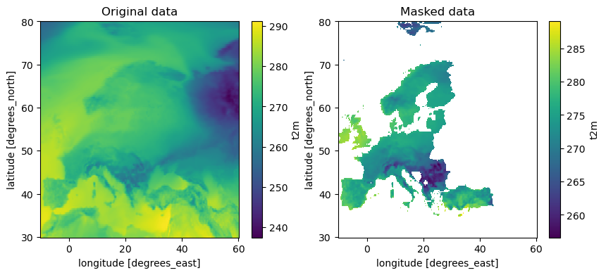
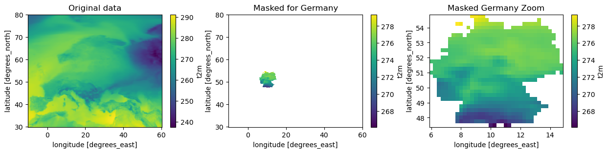

Masking data-cubes using geometry objects
[1]:
import matplotlib.pyplot as plt
from earthkit import transforms as ekt
from earthkit import data as ekd
from earthkit.data.testing import earthkit_remote_test_data_file
Load some test data
All earthkit-transforms methods can be called with earthkit-data objects (Readers and Wrappers) or with the pre-loaded xarray or geopandas objects.
In this example we will use hourly ERA5 2m temperature data on a 0.5x0.5 spatial grid for the year 2015 as our physical data; and we will use the NUTS geometries which are stored in a geojson file.
First we lazily load the ERA5 data and NUTS geometries from our test-data repository.
Note the data is only downloaded when we use it, e.g. at the .to_xarray line, additionally, the download is cached so the next time you run this cell you will not need to re-download the file (unless it has been a very long time since you have run the code, please see tutorials in earthkit-data for more details in cache management).
[2]:
# Get some demonstration ERA5 data, this could be any url or path to an ERA5 grib or netCDF file.
# remote_era5_file = earthkit_remote_test_data_file("test-data", "era5_temperature_europe_2015.grib") # Large file
remote_era5_file = earthkit_remote_test_data_file("test-data", "era5_temperature_europe_20150101.grib")
era5_data = ekd.from_source("url", remote_era5_file)
# Open as an xarray dataset, renaming the 2m temperature variable to something more manageable
era5_xr = era5_data.to_xarray(time_dim_mode="valid_time").rename({"2t": "t2m"})
era5_xr
[2]:
<xarray.Dataset> Size: 11MB
Dimensions: (valid_time: 24, latitude: 201, longitude: 281)
Coordinates:
* valid_time (valid_time) datetime64[ns] 192B 2015-01-01 ... 2015-01-01T23...
* latitude (latitude) float64 2kB 80.0 79.75 79.5 79.25 ... 30.5 30.25 30.0
* longitude (longitude) float64 2kB -10.0 -9.75 -9.5 ... 59.5 59.75 60.0
Data variables:
t2m (valid_time, latitude, longitude) float64 11MB ...
Attributes: (12/13)
param: 2t
paramId: 167
class: ea
stream: oper
levtype: sfc
type: an
... ...
date: 20150101
time: 0
domain: g
number: 0
Conventions: CF-1.8
institution: ECMWF[3]:
# Use some demonstration polygons stored, this could be any url or path to geojson file
remote_nuts_url = earthkit_remote_test_data_file("test-data", "NUTS_RG_60M_2021_4326_LEVL_0.geojson")
nuts_data = ekd.from_source("url", remote_nuts_url)
nuts_data.to_pandas()[:5]
[3]:
| id | NUTS_ID | LEVL_CODE | CNTR_CODE | NAME_LATN | NUTS_NAME | MOUNT_TYPE | URBN_TYPE | COAST_TYPE | FID | geometry | |
|---|---|---|---|---|---|---|---|---|---|---|---|
| 0 | DK | DK | 0 | DK | Danmark | Danmark | 0 | 0 | 0 | DK | MULTIPOLYGON (((15.1629 55.0937, 15.094 54.996... |
| 1 | RS | RS | 0 | RS | Serbia | Srbija/Сpбија | 0 | 0 | 0 | RS | POLYGON ((21.4792 45.193, 21.3585 44.8216, 22.... |
| 2 | EE | EE | 0 | EE | Eesti | Eesti | 0 | 0 | 0 | EE | MULTIPOLYGON (((27.357 58.7871, 27.6449 57.981... |
| 3 | EL | EL | 0 | EL | Elláda | Ελλάδα | 0 | 0 | 0 | EL | MULTIPOLYGON (((28.0777 36.1182, 27.8606 35.92... |
| 4 | ES | ES | 0 | ES | España | España | 0 | 0 | 0 | ES | MULTIPOLYGON (((4.391 39.8617, 4.1907 39.7981,... |
Mask dataarray with geodataframe
shapes.mask applies all the features in the geometry object (nuts_data) to the data object (era5_data). It returns an xarray object the same shape and type as the input xarray object with all points outside of the geometry masked
[4]:
single_masked_data = ekt.spatial.mask(era5_xr, nuts_data, union_geometries=True)
single_masked_data
[4]:
<xarray.Dataset> Size: 11MB
Dimensions: (valid_time: 24, latitude: 201, longitude: 281)
Coordinates:
* valid_time (valid_time) datetime64[ns] 192B 2015-01-01 ... 2015-01-01T23...
* latitude (latitude) float64 2kB 80.0 79.75 79.5 79.25 ... 30.5 30.25 30.0
* longitude (longitude) float64 2kB -10.0 -9.75 -9.5 ... 59.5 59.75 60.0
Data variables:
t2m (valid_time, latitude, longitude) float64 11MB dask.array<chunksize=(24, 201, 281), meta=np.ndarray>
Attributes: (12/13)
param: 2t
paramId: 167
class: ea
stream: oper
levtype: sfc
type: an
... ...
date: 20150101
time: 0
domain: g
number: 0
Conventions: CF-1.8
institution: ECMWF[5]:
fig, axes = plt.subplots(1, 2, figsize=(10,4))
era5_xr.t2m.mean(dim='valid_time').plot(ax=axes[0])
axes[0].set_title('Original data')
# Single masked data
single_masked_data.t2m.mean(dim='valid_time').plot(ax=axes[1])
axes[1].set_title('Masked data')
[5]:
Text(0.5, 1.0, 'Masked data')

shapes.masks applies the features in the geometry object (nuts_data) to the data object (era5_data). It returns an xarray object with an additional dimension, and coordinate variable, corresponding to the features in the geometry object. By default this is the index of the input geodataframe, in this example the index is just an integer count so it takes the default name index.
[6]:
masked_data = ekt.spatial.mask(era5_xr, nuts_data)
masked_data
[6]:
<xarray.Dataset> Size: 401MB
Dimensions: (index: 37, valid_time: 24, latitude: 201, longitude: 281)
Coordinates:
* valid_time (valid_time) datetime64[ns] 192B 2015-01-01 ... 2015-01-01T23...
* latitude (latitude) float64 2kB 80.0 79.75 79.5 79.25 ... 30.5 30.25 30.0
* longitude (longitude) float64 2kB -10.0 -9.75 -9.5 ... 59.5 59.75 60.0
* index (index) int64 296B 0 1 2 3 4 5 6 7 8 ... 29 30 31 32 33 34 35 36
Data variables:
t2m (index, valid_time, latitude, longitude) float64 401MB dask.array<chunksize=(1, 24, 201, 281), meta=np.ndarray>
Attributes: (12/13)
param: 2t
paramId: 167
class: ea
stream: oper
levtype: sfc
type: an
... ...
date: 20150101
time: 0
domain: g
number: 0
Conventions: CF-1.8
institution: ECMWFIt is possible to specify a column in the geodataframe to use for the new dimension, for example in NUTS the FID (= feature id) which contains the two letter identier code for each feature:
[7]:
masked_data = ekt.spatial.mask(era5_xr, nuts_data, mask_dim="FID")
masked_data
[7]:
<xarray.Dataset> Size: 401MB
Dimensions: (FID: 37, valid_time: 24, latitude: 201, longitude: 281)
Coordinates:
* valid_time (valid_time) datetime64[ns] 192B 2015-01-01 ... 2015-01-01T23...
* latitude (latitude) float64 2kB 80.0 79.75 79.5 79.25 ... 30.5 30.25 30.0
* longitude (longitude) float64 2kB -10.0 -9.75 -9.5 ... 59.5 59.75 60.0
* FID (FID) object 296B 'DK' 'RS' 'EE' 'EL' ... 'CY' 'CZ' 'DE' 'NO'
Data variables:
t2m (FID, valid_time, latitude, longitude) float64 401MB dask.array<chunksize=(1, 24, 201, 281), meta=np.ndarray>
Attributes: (12/13)
param: 2t
paramId: 167
class: ea
stream: oper
levtype: sfc
type: an
... ...
date: 20150101
time: 0
domain: g
number: 0
Conventions: CF-1.8
institution: ECMWFHere we demonstrate what we have done by plotting the masked objects we have produced
[8]:
fig, axes = plt.subplots(1, 3, figsize=(15,3))
era5_xr.t2m.mean(dim='valid_time').plot(ax=axes[0])
axes[0].set_title('Original data')
masked_data.t2m.sel(FID='DE').mean(dim='valid_time').plot(ax=axes[1])
axes[1].set_title('Masked for Germany')
germany_data = masked_data.sel(FID='DE').dropna(dim='latitude', how='all').dropna(dim='longitude', how='all')
germany_data.t2m.mean(dim='valid_time').plot(ax=axes[2])
axes[2].set_title('Masked Germany Zoom')
[8]:
Text(0.5, 1.0, 'Masked Germany Zoom')

[ ]: